The Unidata Example Gallery
Welcome to the Unidata Python Example Gallery! Check out detailed examples for atmospheric science and meteorology, from data analysis to publication-quality figures. Feel free to use code from these examples in your own work. To download an example, click the "Source" link in the top right corner of the Notebook page. To install Python, get your Conda environment created, and run the example, visit our Guide for Running Examples. Curious about the Python libraries used in these examples? Visit our Useful Python Tools page to learn more!
Have an example you would like to share with the community? Check out the Contributor's Guide and then submit a Pull Request to the repository on GitHub!
For questions regarding the gallery, please visit our Support page.
|
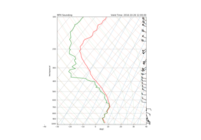
Skew-T |
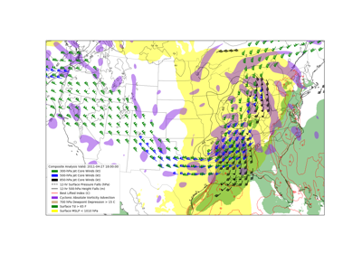
Miller Composite |

Xarray 500-hPa Map |

500-hPa Vorticity Advection |
|
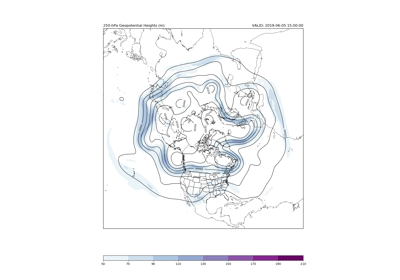
250-hPa Hemispheric Map |
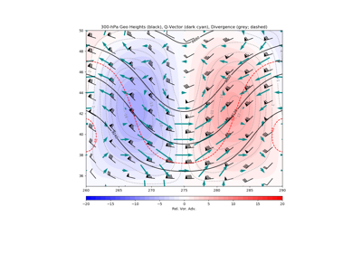
Analytic 300-hPa Trough Map |

500-hPa Heights and Winds |

500-hPa Absolute Vorticity and Winds |
|
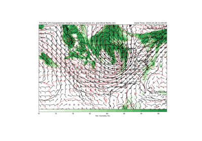
700-hPa Relative Humidity and Winds |
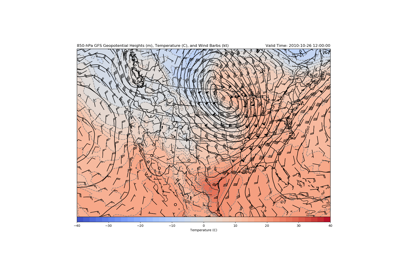
850-hPa Temperature and Winds |
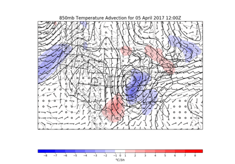
850-hPa Temperature Advection |

850-hPa Frontogenesis |
|
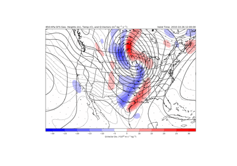
850-hPa Q-Vectors |
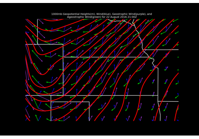
Ageostrophic Wind Map |
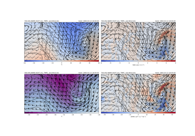
Differential Temperature Advection |
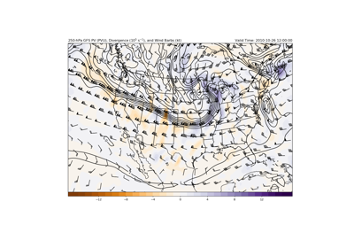
Baroclinic and Isobaric Potential Vorticity |
|
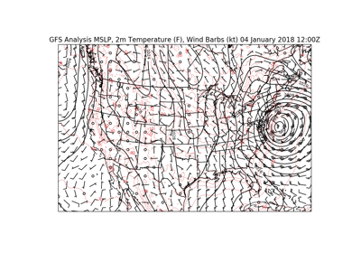
Surface Map: MSLP, Temperature, and Winds |
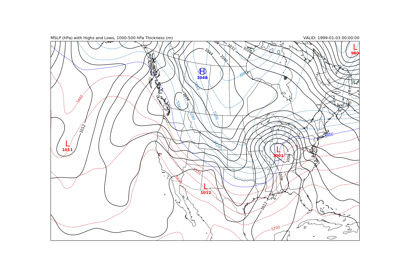
High & Low Pressure Symbols |
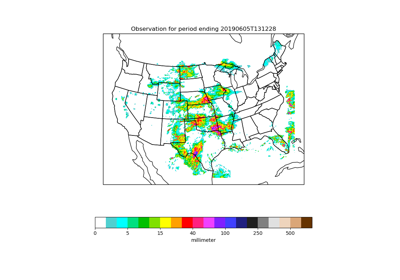
Precipitation Map |
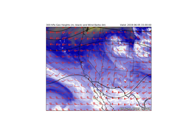
GOES 16/17 Satellite Plotting |
|
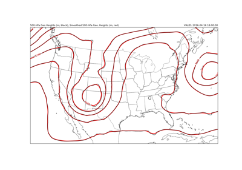
How to Smooth Contours |
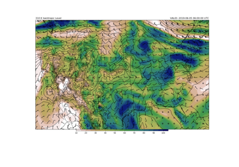
Isentropic Interpolation |
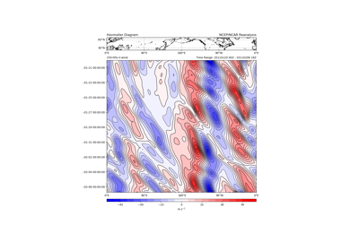
Hovmoller Diagram |
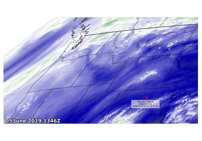
GOES 16/17 Satellite and Aircraft Location |

GFS Model Output Widget |
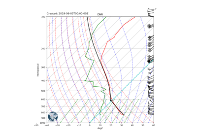
Sounding Plotter |
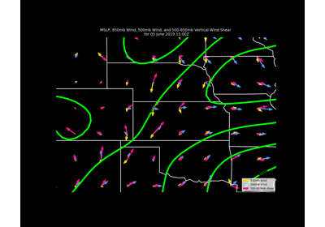
Wind Shear Vectors |
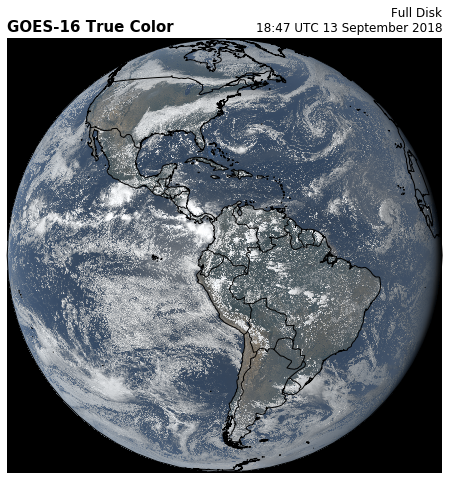
Plotting GOES 16 True Color Images |
|
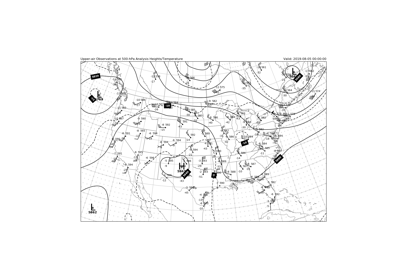
Upper-Air Observations on a Legacy DIFAX Chart |
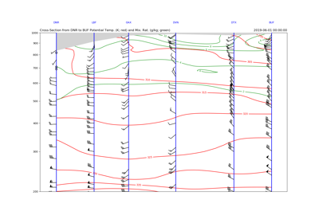
Observational Data Cross Section |
Interactive Hurricane Tracker |
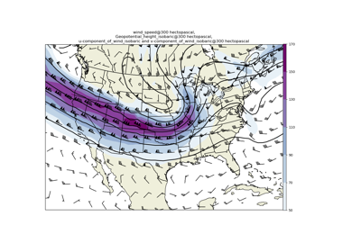
Declarative Plotting Interface Example |
|
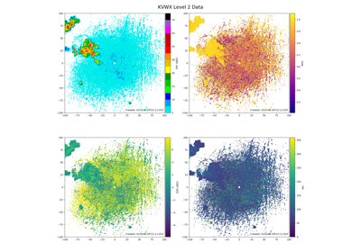
AWS S3 NEXRAD Archive Access and Plotting |